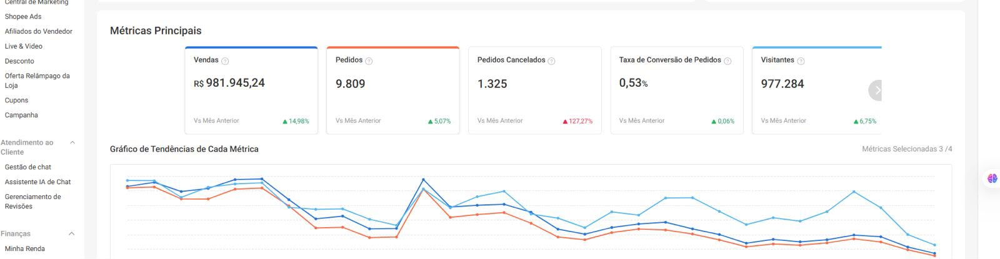
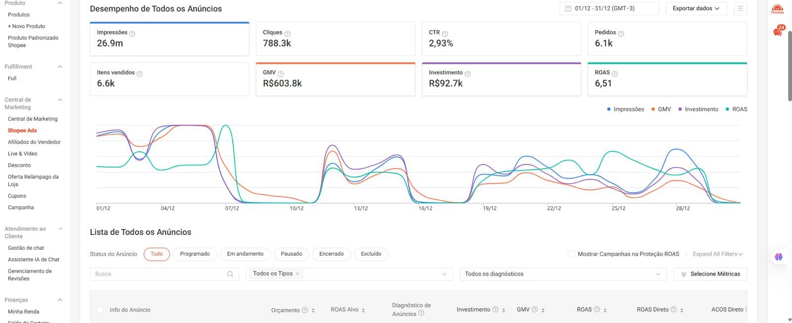
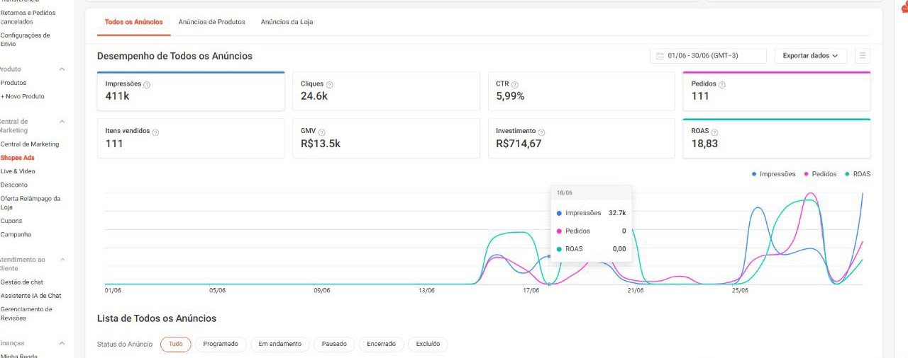
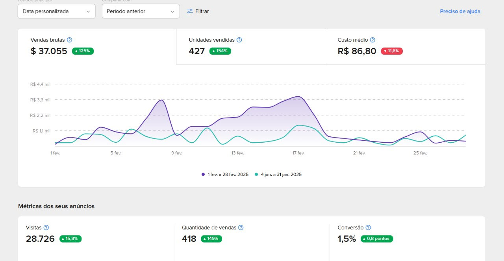
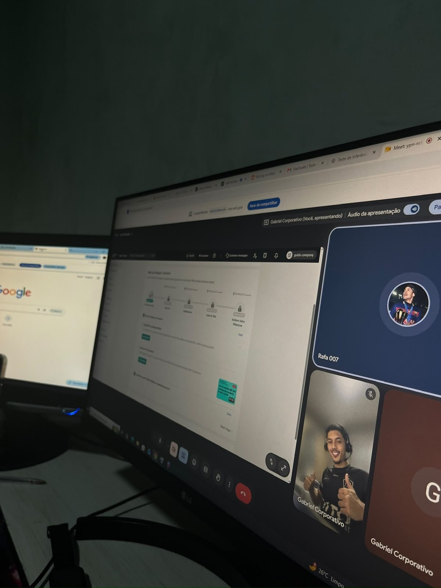

Quero começar
do jeito certo.
Você quer aprender, estruturar sua operação ou se profissionalizar em marketplace sem depender de tentativa e erro.
MentoriaEducaçãoOperaçãoAds
Esse é meu momento →Para quem quer entrar com direção — e para operações que já vendem, mas sabem que ainda existe espaço para performar melhor.
Precisa entender o que está travando sua operação agora — e qual movimento faz sentido depois.
Escolha o cenário que mais se aproxima do seu. A estratégia começa pelo contexto.
Você quer aprender, estruturar sua operação ou se profissionalizar em marketplace sem depender de tentativa e erro.
Você já tem operação, mas precisa encontrar gargalos, melhorar performance e tomar decisões com mais direção.
Alguns recortes de operações e projetos acompanhados. Não como promessa de resultado futuro — como evidência de trabalho aplicado.




Passe pelos pontos e veja como cada parte interfere na próxima.
Não começamos pela ferramenta. Começamos entendendo o que a operação precisa.
Onde estamos?
O que move o ponteiro?
Qual é o plano?
Como colocamos em prática?
O que os dados pedem agora?

Aulas e mentorias construídas em cima de operação real. Tela compartilhada, análise, campanha, tomada de decisão e acompanhamento.
Leitura da operação para localizar gargalos, riscos e oportunidades.
Direção estratégica para decisões de mídia, catálogo, conversão e crescimento.
Acompanhamento de iniciativas específicas com objetivo, execução e leitura de performance.
Gabriel conduz a frente estratégica da Vertis, conectando experiência prática em marketplace, mídia e acompanhamento de operações à realidade de cada negócio.
A ideia não é transformar a Vertis em uma marca pessoal. É deixar claro que estratégia não acontece no automático.
“A operação precisa fazer sentido antes de escalar.”
Sem pacote empurrado. A primeira conversa serve para entender cenário, momento e objetivo.
Conversar no WhatsApp ↗